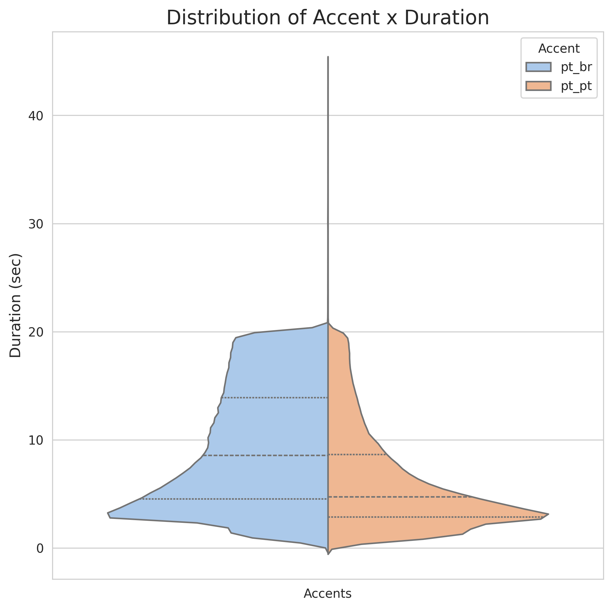
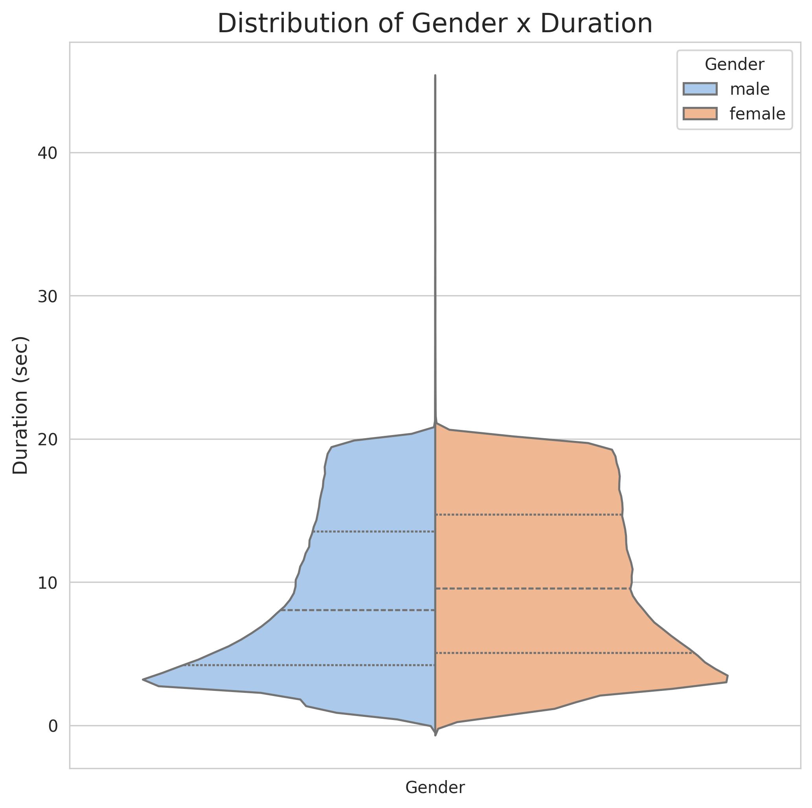
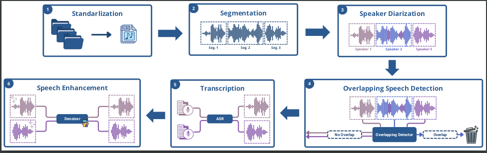
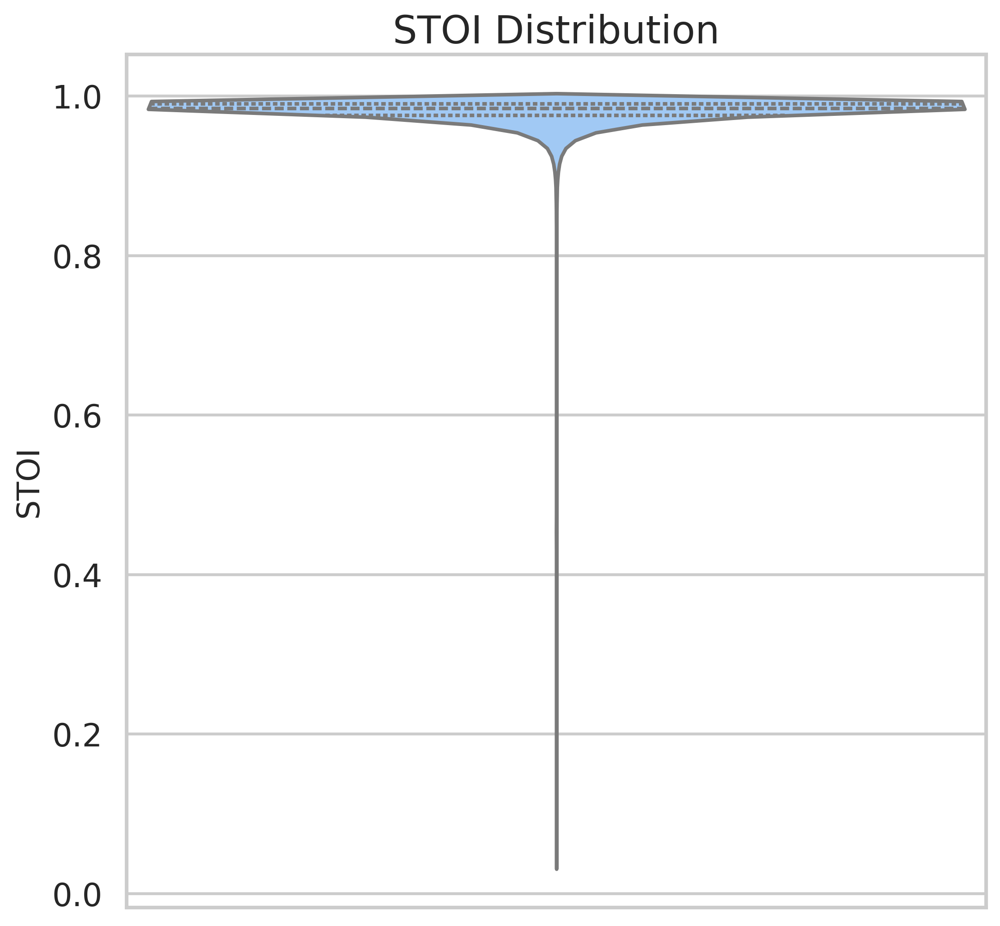
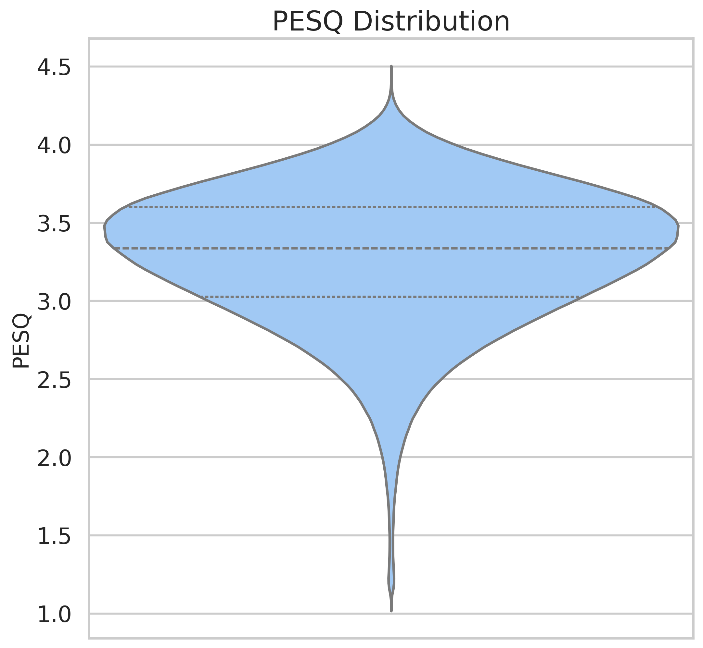
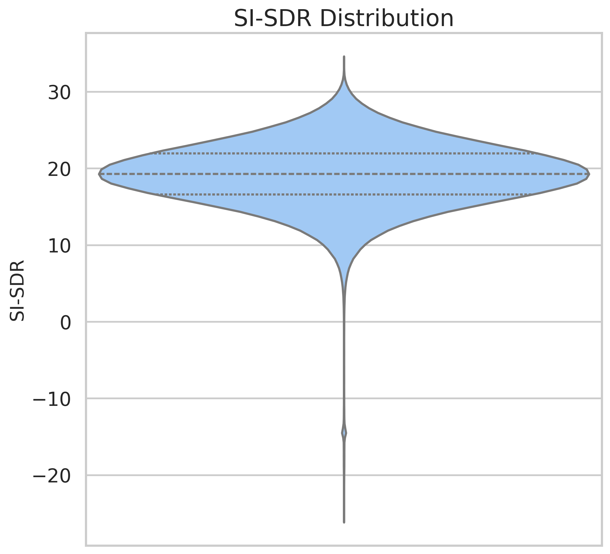

Abstract
TAGARELA is a large-scale Portuguese speech dataset containing more than 8,972 hours of podcast audio collected from the Cem Mil Podcasts repository. Covering both Brazilian and European Portuguese, the dataset was designed to support research in Automatic Speech Recognition (ASR) and Text-to-Speech (TTS), helping address the lack of large public speech resources for Portuguese.
To ensure high-quality data, we developed a preprocessing pipeline including audio standardization, segmentation, speaker diarization, overlapping speech detection, speech enhancement, and large-scale transcription generation. Transcriptions were produced using a bootstrap strategy that combines commercial ASR systems and fine-tuned open-source models.
The resulting corpus is divided into a full ASR subset and a clean-speech subset optimized for TTS. Experiments with state-of-the-art models demonstrate the dataset's effectiveness for building robust Portuguese speech technologies.
Dataset Overview
TAGARELA was created to reduce the gap between Portuguese and high-resource languages such as English, which benefit from massive speech corpora like LibriSpeech and GigaSpeech. The dataset was derived from the Cem Mil Podcasts collection and transformed into a high-quality speech resource through a dedicated processing pipeline.
Dataset Statistics
8,972+
Hours of Audio
16,806
Podcast Episodes
2,094
Podcast Shows
13,368
Distinct Speakers
8,130h
Brazilian Portuguese
842h
European Portuguese
Distribution by Dialect and Gender


Dataset Subsets
Full Dataset (ASR)
The full subset contains 8,972 hours of speech and preserves natural conversational characteristics commonly found in podcasts. It is intended for training robust Automatic Speech Recognition systems under real-world conditions.
Clean-Speech Dataset (TTS)
The Clean-Speech subset contains approximately 2,800 hours of filtered speech, providing cleaner and more consistent audio for speech synthesis, voice cloning, and speech generation tasks.
Processing Pipeline
TAGARELA was built through a multi-stage pipeline designed to transform raw podcast recordings into a high-quality research dataset.

1. Audio Standardization
All recordings were converted to a common format (FLAC, 16 kHz, 16-bit, mono) to ensure consistency across the corpus.
2. Segmentation
Long recordings were split into 5–20 second segments, prioritizing natural pauses to preserve speech coherence.
3. Speaker Diarization
We used pyannote.audio to separate speakers and generate single-speaker segments, an essential requirement for TTS applications.
4. Overlapping Speech Detection
A classifier based on Wav2Vec2-XLS-R was trained to identify and remove segments containing overlapping speech.
5. Bootstrap Transcription
A 1,000-hour seed corpus transcribed with a commercial ASR service was used to fine-tune Whisper Large V3. A second Wav2Vec2-XLS-R model was trained to validate generated transcriptions, allowing low-quality samples to be filtered automatically.
6. Speech Enhancement and Labeling
Audio quality was improved using a speech enhancement model based on Vocos. Additionally, speaker identities and dialect labels (Brazilian vs. European Portuguese) were automatically generated, enriching the dataset with valuable metadata.
Benchmark Results
To validate the dataset, several state-of-the-art ASR and TTS models were trained using TAGARELA.
Automatic Speech Recognition
Parakeet v2 Fine-Tuned achieved the best performance, reaching 15.18% WER and 7.09% CER, outperforming Whisper Large V3, Distil-Whisper, and Wav2Vec2 Large. Models marked with FT were fine-tuned on TAGARELA data, while others are pre-trained baselines.
| Model | WER (%) | CER (%) |
|---|---|---|
| Whisper Large V3 | 20.91 | 12.42 |
| Wav2Vec Large FT | 21.85 | 8.55 |
| Distil-Whisper FT | 20.02 | 11.18 |
| Parakeet v3 | 23.30 | 14.86 |
| Parakeet v2 FT | 15.18 | 7.09 |
Text-to-Speech
Using the 2,800-hour Clean-Speech subset, both Orpheus-TTS and Chatterbox achieved MOS scores above 4.15, demonstrating the suitability of TAGARELA for high-quality speech synthesis.
| Model | WER (%) | CER (%) | MOS |
|---|---|---|---|
| Chatterbox | 0.3111 ± 0.442 | 0.268 ± 0.423 | 4.176 ± 0.983 |
| Orpheus-TTS | 0.095 ± 0.100 | 0.046 ± 0.051 | 4.155 ± 1.001 |
| Ground Truth | 0.010 ± 0.033 | 0.006 ± 0.018 | 4.231 ± 1.001 |
Audio Quality Metrics
The audio quality of the dataset was assessed using three objective metrics:



Models
The ASR model fine-tuned on TAGARELA is publicly available on the Hugging Face Hub in two formats: the original NeMo checkpoint and an ONNX export for lightweight, framework-independent inference. Both models expect 16 kHz mono audio.
Parakeet TDT 0.6B v3 pt-BR (NeMo)
Download on Hugging FaceInstallation
pip install -U "nemo_toolkit[asr]" huggingface_hubInference
import nemo.collections.asr as nemo_asr
from huggingface_hub import hf_hub_download
# Download the .nemo checkpoint from the Hub
checkpoint = hf_hub_download(
repo_id="alexandreacff/parakeet-tdt-0.6b-v3-ptBR-plus",
filename="parakeet-tdt-0.6b-v3-datasets-ptbr-e-podcasts-pontuados-e-sintetico.nemo",
)
# Load the model
asr_model = nemo_asr.models.ASRModel.restore_from(restore_path=checkpoint)
asr_model.eval()
# Transcribe a 16 kHz mono audio file
hypotheses = asr_model.transcribe(["audio.wav"])
print(hypotheses[0].text)Parakeet TDT 0.6B v3 pt-BR TAGARELA (ONNX)
Download on Hugging FaceInstallation
pip install "onnx-asr[cpu,hub]"Inference
import onnx_asr
from huggingface_hub import snapshot_download
# Download the ONNX model files
model_dir = snapshot_download(
repo_id="alefiury/parakeet-tdt-0.6b-v3-ptBR-TAGARELA-onnx",
local_dir="./parakeet-tdt-0.6b-v3-ptBR-TAGARELA-onnx",
)
# Load the model with the NeMo Conformer TDT runtime
model = onnx_asr.load_model("nemo-conformer-tdt", model_dir)
# Transcribe a 16 kHz mono audio file
print(model.recognize("audio.wav", language="pt"))Conclusion
TAGARELA provides a large-scale, publicly available Portuguese speech corpus that supports both ASR and TTS research. By combining advanced preprocessing, transcription, and quality-control techniques, the dataset offers a strong foundation for developing the next generation of Portuguese speech technologies.
License
The TAGARELA dataset is released under the Creative Commons Attribution-NonCommercial-ShareAlike 4.0 International (CC BY-NC-SA 4.0) license.
Citation
If you use the TAGARELA dataset in your research, please cite:
Authors
Acknowledgements
This work has been fully funded by the project Research and Development of Algorithms for Construction of Digital Human Technological Components supported by the Advanced Knowledge Center in Immersive Technologies (AKCIT) in partnership with the Federal University of Goiás (UFG).